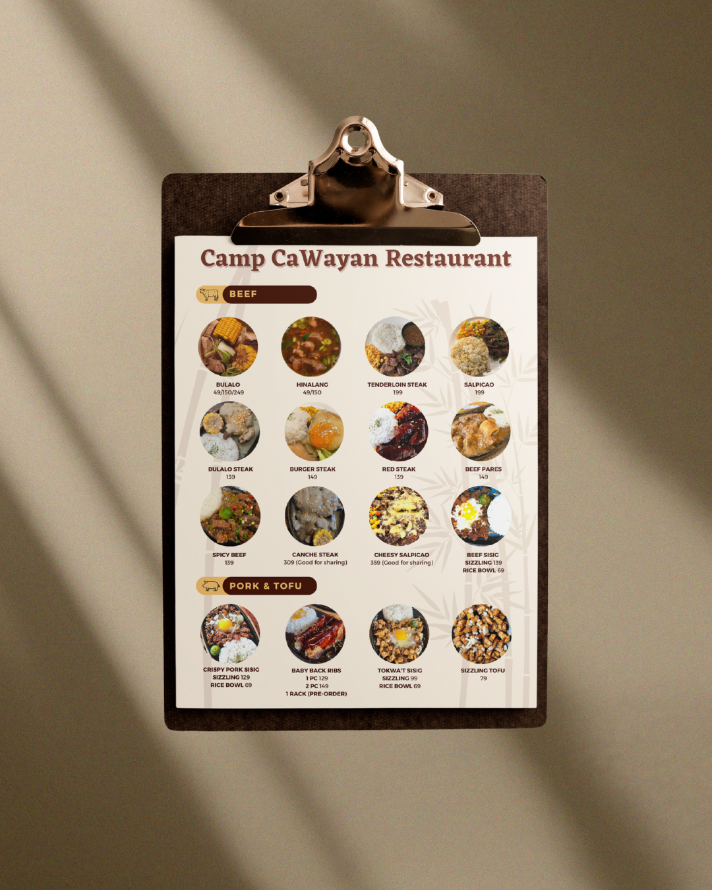
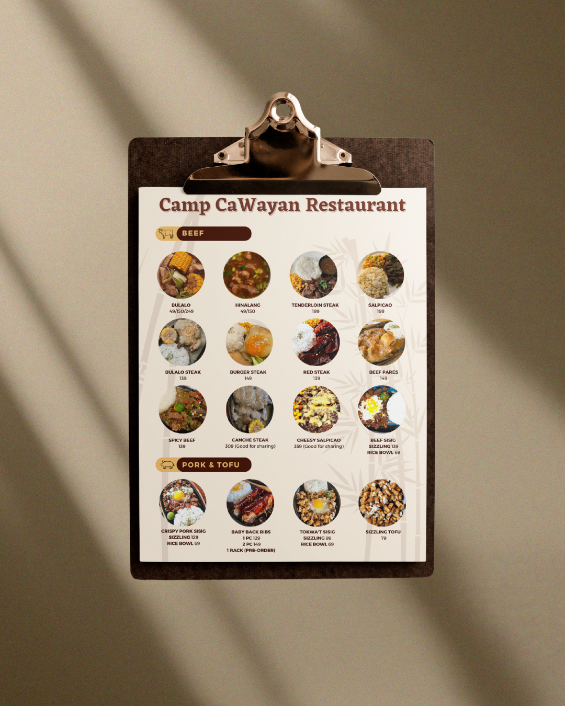

Motion & Story
Aimee is a multimedia artist who loves telling stories through short films and music videos. Her passion for cinematography led her to direct the award-winning short film Huni.


Different beats, one creative flow.
Aimee is a multimedia artist who loves telling stories through short films and music videos. Her passion for cinematography led her to direct the award-winning short film Huni.
Ian is a multimedia artist specializing in photography. He captures moments that tell quiet stories — finding beauty in light, detail, and the in-between.
Jugi is a multimedia artist specializing in graphic design. She focuses on creating visuals that blend clarity and creativity, turning simple ideas into striking designs.
 
